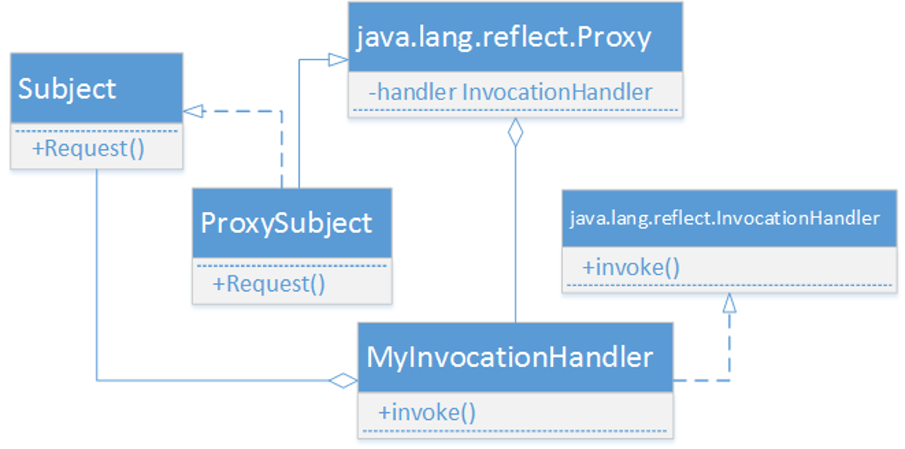

动态代理机制
MyBatis和数据库的交互有两种方式：
使用传统的MyBatis提供的API
使用传统的MyBatis提供的API ，需要传递Statement Id 和查询参数给 SqlSession 对象，MyBatis 提供了非常方便和简单的API，供用户实现对数据库的增删改查数据操作
使用Mapper接口
使用Mapper接口，MyBatis 将配置文件中的每一个<mapper> 元素抽象为一个 Mapper 接口，而这个接口中声明的方法和<mapper> 元素中的<select|update|delete|insert> 子元素相对应
为什么Mapper接口中的抽象方法，没有自己定义实现类却能被正常调用呢？
- MyBatis在Mapper接口上使用了动态代理
- 代理机制是Java中常用的设计模式，分为静态代理和动态代理。
静态代理：在程序编译时已经将接口、代理类和被代理类等确定下来
动态代理：代理类在程序运行期间动态创建
Java中动态代理的实现
在java的java.lang.reflect包下提供了一个Proxy类和一个InvocationHandler接口，通过这个类和这个接口可以生成JDK动态代理类和动态代理对象。

- 通过sqlSession.getMapper(XXXMapper.class) 方法，MyBatis 会根据相应的接口声明的方法信息，通过动态代理机制生成一个Mapper 实例
- 使用Mapper 接口的某一个方法时，MyBatis 会调用MapperProxy类的invoke()方法
- 底层还是通过SqlSession的select、update、delete、insert等方法来实现对数据库的操作
插入操作
单条插入
在映射器接口中定义如下方法
1 | public int insert(User user); |
在映射文件中添加如下代码
1 | <insert id="insert" parameterType="com.mybatis.entity.User"> |
insert元素，用于映射插入语句
- id属性：命名空间中的唯一标识符，为Mapper接口中的方法名
- parameterType：指定了方法的参数类型，为可选项可以省略
- 元素的内容为插入的SQL语句
- #{id}：MyBatis SQL中使用预编译参数的一种方式，当实际参数为JavaBean对象时，大括号中的id是其属性名
测试代码
1 | SqlSession session = MyBatisUtil.openSqlSession(); |
insert方法的返回值num是执行插入语句所影响的行数
使用JDBC方式返回主键自增的值
- 如果数据库设计时，主键字段为自动增长，那么需要插入的User对象的id属性值可以为null
- 如果想在执行插入操作以后返回表中的主键值，需要在映射文件中insert元素中加上如下两个属性
1 | <insert id="insert" useGeneratedKeys="true" keyProperty="id"> |
- useGeneratedKeys属性仅对 insert 和 update 有用，这会令 MyBatis 使用 JDBC 的 getGeneratedKeys 方法来取出由数据库内部生成的主键
- keyProperty 属性仅对 insert 和 update 有用，唯一标记一个属性，获得的主键值将会赋值给该属性
1 | int num = userMapper.insert(u); |
使用selectKey返回主键的值
对于一些不提供主键自增功能的数据库，如Oracle，需要使用selectKey标签来获取主键的值
1 | <insert id="insert" useGeneratedKeys="true" keyProperty="id"> |
keyProperty属性表示主键所对应的属性名
resultType属性用于设置返回值类型
在MySQL中order属性设置为after，表示当前记录的主键值在insert语句执行成功后才能获取到，Oracle中设置为before
selectKey元素中的内容是一个独立的SQL语句，在MySQL中SELECT LAST_INSERT_ID()用于获取数据库中最后插入的数据的主键值
在Oracle中应该使用SELECT SEQ_ID.nextval from dual 用来获取序列中的一个值
查询操作
普通查询
根据用户id查询单条记录，在映射器接口中定义如下方法
1 | public User selectById(Integer id); |
当实体类的属性名与数据库表的字段名一一对应时，映射代码如下所示：select元素用于映射查询语句
1 | <select id="selectById" resultType="com.mybatis.entity.User"> |
测试代码
1 | SqlSession session = MyBatisUtil.openSqlSession(); |
当实体类属性名与表字段不一致时，可以使用resultMap元素映射其对应关系
1 | <resultMap type="com.mybatis.entity.User" id="userMap"> |
resultMap是一种很重要的配置结果映射的方法
- id属性：必填，是结果映射的唯一标识，与select元素中resultMap属性的值一致
- type属性：必填，用于指定查询结果所映射到的Java对象类型
- id子元素：配置id对应的column（字段名）和property（属性名）
- result子元素：配置普通结果对应的字段名和属性名
当实体类属性与表字段不一致时，也可以通过设置别名进行映射
1 | <select id="selectAllUsers" resultType="com.mybatis.entity.User"> |
模糊查询like
1 | <select id="findLike" resultMap="userMap"> |
表达式: user_name like”%”#{name}”%” #起到占位符的作用
更新操作
在映射器接口中定义如下方法
1 | public int updateById(User user); |
在映射文件中添加如下代码
1 | <update id="updateById"> |
测试代码
1 | SqlSession session = MyBatisUtil.openSqlSession(); |
删除操作
删除同更新操作类似，在映射器接口中定义如下方法
1 | public int deleteById(Integer id); |
在映射文件中添加如下代码
1 | <delete id="deleteById"> |
测试代码
1 | SqlSession session = MyBatisUtil.openSqlSession(); |